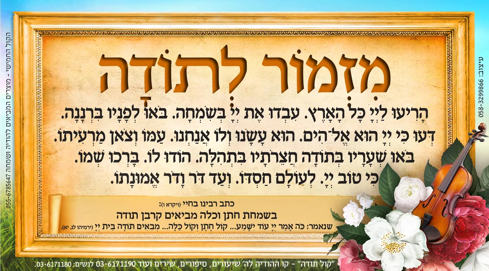

טעם ראשון
מזמור לתודה יש לאומרה בנגינה, שכל השירות עתידות ליבטל חוץ ממזמור לתודה. (שולחן ערוך סימן נא סעיף ט) לבוש: מזמור לתודה. יש לאומרו בנגינה, מפני שהוא שיר נאה ומשובח שהיו אומרים אותו על כל קרבני התודות שהיו מקריבין לתת שבח ותודה לאלהים על כל הטובות שגמלנו, לפיכך אמרו רז"ל [ויק"ר ט, ז] כל השירות עתידות ליבטל חוץ ממזמור לתודה, כי חסדיו וטובותיו לא יפסקו לעולם כמו שנאמר [תהלים קלו] כי לעולם חסדו. |
שאלות לעיון
- מה המקור של השו''ע, שמזמור לתודה לא עתיד להתבטל?
- איזה לשון דומה מצאנו במזמור לתודה (בפסוק החמישי) ובקול החמישי?
- מה ההבדל בין הודו לה' כי טוב, לבין כי טוב ה'?
- מדוע בקול החמישי שייך לומר כי טוב ה'?
- מה למד מכאן המדרש?
- לא רק לשון דומה, אלא גם מבנה דומה יש לקולות החתונה ולמזמור לתודה. הסבר!
- היכן רמוזים החמשה קולות במזמור לתודה? (וורט יפה)
- הבא ראיה מהמדרש ש'קול כלה' – הכוונה גם לעם ישראל כלפי הקב''ה?
- מכוח הבטחת ה' למזמור לתודה בקול החמישי בירמיה, נפסקה הלכה חשובה למעשה, בצורה שבה צריך לומר מזמור לתודה, מהי?
- חשוב! מה מיוחד במזמור לתודה יותר משאר מזמורים של הודיה בתהילים?
- האם תוכל ללמוד הנהגה ראויה למעשה בחתונה מכל הנ''ל?
- רמז יפה: בפסוק החמישי במזמור לתודה נוספו ד' מילים 'ועד דור דור אמונתו'. כיצד הם קשורות לנישואין?
תשובות
- בפשטות ניתן לחשוב שמקורו של הש''ע, מהדין שכל הקרבנות עתידים להתבטל, חוץ מקרבן לתודה, ואם הקרבן נשאר גם מזמור לתודה ישאר. אבל שנדייק בדברי השו''ע, נראה שלא זה מה שכתב, אלא לשונו "כל השירות עתידות להבטל חוץ ממזמור לתודה". כך גם במדרש משמע שיש שני דינים קרבן ומזמור, וכל אחד הוא דין בפני עצמו. והמקור של המדרש שגם מזמור לתודה ישאר יבואר בתשובות הבאות:
- בקול החמישי נאמר בירמיה: כֹּה אָמַר יְיָ עוֹד יִשָּׁמַע בַּמָּקוֹם הַזֶּה... בְּעָרֵי יְהוּדָה וּבְחֻצוֹת יְרוּשָׁלִַם... קוֹל שָׂשׂוֹן וְקוֹל שִׂמְחָה קוֹל חָתָן וְקוֹל כַּלָּה קוֹל אֹמְרִים הוֹדוּ אֶת יְיָ צְבָאוֹת כִּי טוֹב יְיָ כִּי לְעוֹלָם חַסְדּוֹ. ובמזמור לתודה (תהלים פרק ק, ה) בפסוק החמישי נאמר "כִּי טוֹב יְיָ לְעוֹלָם חַסְדּוֹ וְעַד דֹּר וָדֹר אֱמוּנָתוֹ" (יש הרבה מזמורים הודו לה' כי טוב, אבל אין כי טוב ה' עם לעולם חסדו).
- הרבה מזמורים יש "הודו לה' כי טוב", אבל אין כמעט מזמור שנאמר על הזמן הזה שאומר "כי טוב ה'". משום שהודו לה' - כי טוב פירושו הודו לה' על הטוב שעשה לכם. אבל כי טוב ה' – פירושו ההכרה הנפלאה שתהיה לעתיד לבוא שכולו הטוב והמטיב, שגם הרע הוא כולו טוב, וה' עושה רק טוב. להכרה זו גם ברגש קשה להגיע בזמן הזה.
- הקול החמישי מדבר גם על לעתיד לבוא 'עוד ישמע', אז כולם יכירו בטובו של ה'.
- מצינו בפסיקתא דרב כהנא (פרשת אמור פ"ט): "לעתיד לבוא כל הקרבנות בטילות וקרבן תודה אינו בטל לעולם, כל ההודיות בטילות והודיית תודה אינה בטילה לעולם. הדא דכתיב (ירמיה לג, יא), "קול ששון וקול שמחה קול חתן וקול כלה קול אומרים הודו את ה' צבאות כי טוב ה' כי לעולם חסדו" - אילו ההודיות. היינו שמקור הפסיקתא הוא מלשון הפסוק: "קול אומרים הודו את ה' צבאות" והיאך יודו לה' צבאות, על זה ממשיך הכתוב ואומר שיודו לו בתיבות אלו "כי טוב ה', כי לעולם חסדו" – אשר תיבות אלו אנו מוצאים אך ורק ב"מזמור לתודה", בפסוק "הודו לו ברכו שמו כי טוב ה', לעולם חסדו". מהקול החמישי בירמיה למד המדרש שהודית תודה הינו מזמור לתודה לא יתבטל לעתיד לבוא.
- החמשה הקולות בחתונה בנויים בצורה: ארבעה נותן הקב''ה, כדי שאנו ניתן בתגובה קול חמישי. גם מזמור לתודה בנוי כך רק בצורה הפוכה: ארבעה פסוקים ראשונים נותנים אנו כתגובה לפסוק החמישי – טובות ה' עימנו.
- קול ששון - הריעו לה' כל הארץ (על דרך שכתב רש''י (סוכה מח/א) לגבי שמחת בית השואבה: תקעו והריעו משום שמחה, דכתיב (ישעיהו יב) ושאבתם מים בששון (יפה מסביר שם המצודת דוד - ר"ל כמו השואב מים מן המעין הנובע הנה שואב הוא בששון כי לא ידאג פן יכלה המים כן תשאבו בששון את הישועה ממעיני הישועה כי לא תופסק התשועה כי יד ה' לא תקצר). וקול שמחה – עבדו את ה' בשמחה, בואו לפניו ברננה (כמו שלמדנו שבואו לפניו ברננה הוא הסבר כיצד לעבוד את ה' בשמחה). קול חתן – הנה הפסוק השלישי במזמור לתודה מחולק לשניים. חלק ראשון מדבר על היחס שלנו כלפי ה' שהוא כמו החתן שלנו. חלק שני מדבר על היחס של ה' אלינו, שאנו כמו הכלה שלו. דעו כי ה' הוא האלוקים הוא עשנו ולא אנחנו – שה' הוא החתן שלנו. וקול כלה – ולו אנחנו עמו וצאן מרעיתו – היחס של ה' אלינו. (במילה "עמו" כלול שאנחנו נחשבים לעם המיוחד - "עם הסגולה" - של הקב"ה, הכלה של הבורא, כפי שכתוב בפסוק "והייתם לי סגולה מכל העמים". רש"י שם מפרש את משמעות המילה 'סגולה': "אוצר חביב, כמו 'וסגולת מלכים', כלי יקר ואבנים טובות שהמלכים גונזים אותם, כך אתם תהיו לי סגולה משאר האומות". עכ"ל. זאת אומרת שיש להקב"ה אהבה מיוחדת כלפינו כיון שאנחנו עמו המיוחד, וכמו שכתוב במשנה (אבות ג', י"ד) "חביבין ישראל שנקראו בנים למקום", וכמו שאנו אומרים בברכת קריאת שמע: "ברוך אתה ה' אוהב עמו ישראל".)
מִזְמ֥וֹר לְתוֹדָ֑ה הָרִ֥יעוּ לַ֝ייָ֗ כָּל־הָאָֽרֶץ: - עִבְד֣וּ אֶת־יְיָ֣ בְּשִׂמְחָ֑ה בֹּ֥אוּ לְ֝פָנָ֗יו בִּרְנָנָֽה:
דְּע֗וּ כִּֽי־יְיָ֘ ה֤וּא אֱלֹ֫הִ֥ים הֽוּא־עָ֭שָׂנוּ - וְל֣וֹ אֲנַ֑חְנוּ עַ֝מּ֗וֹ וְצֹ֣אן מַרְעִיתֽוֹ:
בֹּ֤אוּ שְׁעָרָ֨יו בְּתוֹדָ֗ה חֲצֵרֹתָ֥יו בִּתְהִלָּ֑ה הֽוֹדוּ־ל֝֗וֹ בָּרֲכ֥וּ שְׁמֽוֹ: כִּי־ט֣וֹב יְ֭יָ לְעוֹלָ֣ם חַסְדּ֑וֹ וְעַד־דֹּ֥ר וָ֝דֹ֗ר אֱמוּנָתֽוֹ:
- המדרש אומר: בעשרה מקומות נקראו ישראל כלה, שש על ידי שלמה, ושלש על ידי ישעיה, ואחת על ידי ירמיה. שש על ידי שלמה, אתי מלבנון כלה, ליבבתיני אחותי כלה, מה יפו דודיך אחותי כלה, נפת תטפנה שפתותיך כלה, גן נעול אחותי כלה, באתי לגני אחותי כלה. ושלש על ידי ישעיה, כי כולם כעדי תלבשי ותקשרם ככלה , כחתן יכהן פאר וככלה תעדה כליה, ומשוש חתן על כלה. ואחת על ידי ירמיה, קול ששון וקול שמחה קול חתן וקול כלה (פסיקתא דרב כהנא כב).
הקשה בתורה תמימה: פסוק זה שבירמיה לא איירי ביחס הקדוש ברוך הוא לישראל אלא רק שישמע בערי יהודה קול חתן וקול כלה? לפי מה שלמדנו שפסוק זה רומז על מזמור לתודה שם קול כלה – הוא היחס של ה' לישראל ככלה, הרי הדברים נפלאים. - שולחן ערוך (סימן נא סעיף ט): מזמור לתודה יש לאומרה בנגינה, שכל השירות עתידות ליבטל חוץ ממזמור לתודה.
- בפשטות כוונת השו''ע שלרוב חשיבותו של המזמור שאינו בטל, ראוי לאומרו בשמחה ובנגינה. יתכן ויש בזה עומק נוסף ויבואר במקום אחר.
- לאחר שלמדנו שכוונת הכתוב בקול אומרים הודו היא, להודות לה' במזמור לתודה. ראוי ונכון הוא לומר מזמור לתודה בנישואין ברוב עם, בשירה, שמחה והודיה.
- נישואין עניינם המשכת כבוד שמים בעולם ממתן תורה ועד ביאת המשיח, כמה מתוק לומר בזמן זה את המילים 'ועוד דור ודור אמונתו' - האמונה שלנו בבורא עולם שיגיע הזמן בו כל העולם יכיר בטוב ה', ונישואין אלו הם המשך שרשרת הדורות מבריאת העולם ועד תיקון העולם במלכות ש-די.

.ניתן להזמין מגנט מיוחד לנישואין לחלוקה לציבור הרחב.